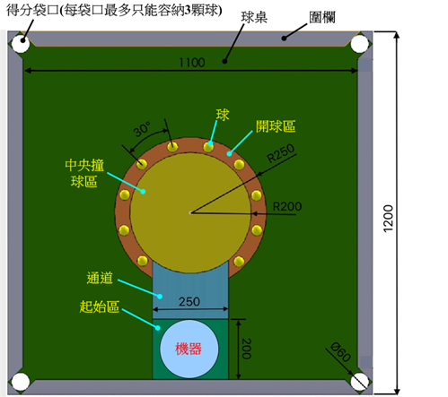
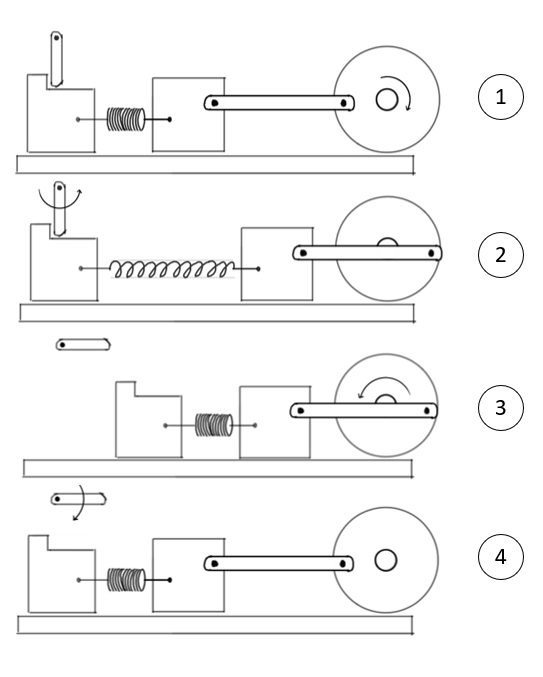
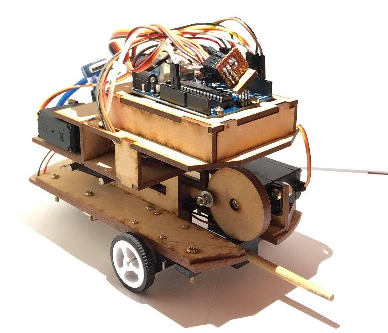

本專題為機械設計原理的期末專題目標為設計一台車輛能透過遙控裝置控制車輛之動作，並控制其中設備利用竹筷作為撞擊工具撞擊場地中所有的球使其入袋。
場地示意圖
為提供有效撞擊能量，本文設計利用兩個馬達達成此任務，第一個拉動滑塊曲柄機構同步拉伸彈簧提供位能；第二個則作為開關竹筷向前彈射。此方法相較於常見的齒輪尺條的設計能避免齒輪損壞的危險以及提供不同的彈射強度方便使用者做操作。
滑塊撞擊機構運作原理圖
(1)為初始狀態；(2)滑塊做拉伸同步帶動彈簧的拉長，此步驟可以透過改變曲柄的旋轉角度來控制彈簧所儲存的位能；
(3)釋放開關，將彈簧的位能轉變為擊球機構的動能；(4)將曲柄與開關做歸位。
撞擊機構概念圖與成品
撞擊機構運作影片
移動系統則是採用常見的兩輪驅動的方式來做移動；控制系統的部分則使已Arduino來控制各個電機並以PS2手把作為訊號輸入源來控制撞球車之動作。
撞球車成品圖
在測試中本車用7:54出14桿進10球、以及8:54出18桿進9球。